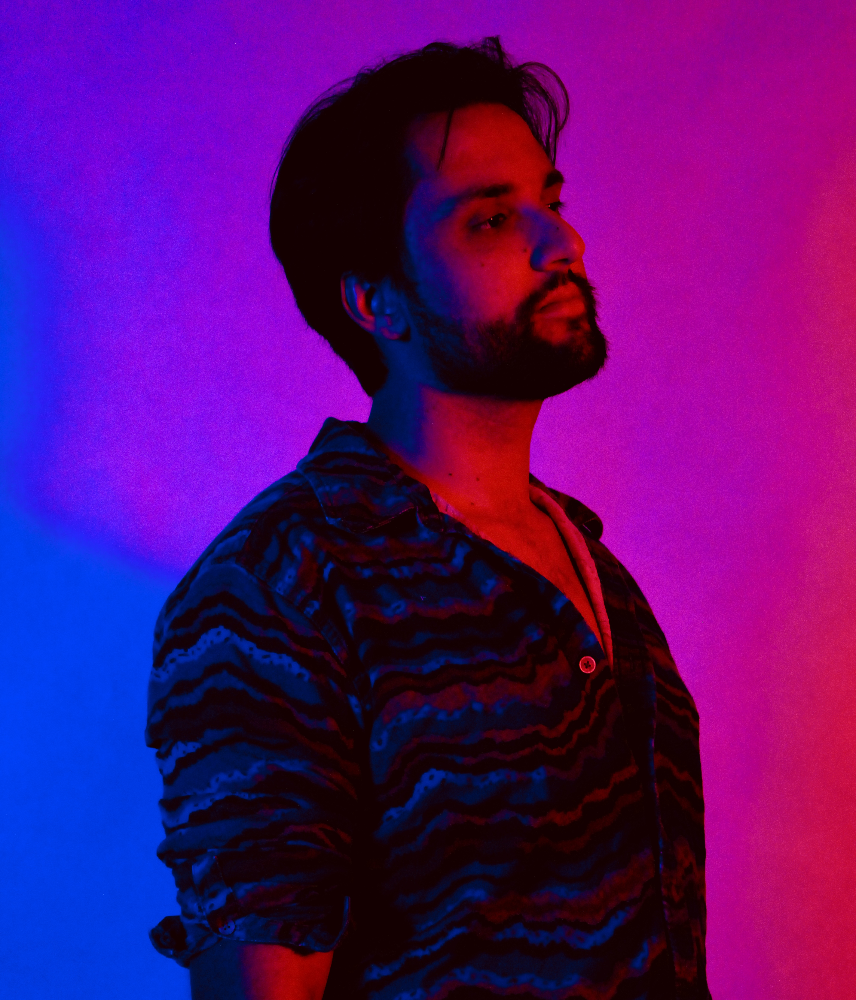

Parametrics is the solo project of multi-instrumentalist David Gonzalez, blending psychedelia, retro vibes, and synthwave elements with catchy pop elements. His music features lush synths, dreamy soundscapes, and driving rhythms, creating a sonic experience that feels nostalgic yet innovative. With his blend of vintage and modern textures, Parametrics invites you to a sonic journey that will surely captivate your senses.